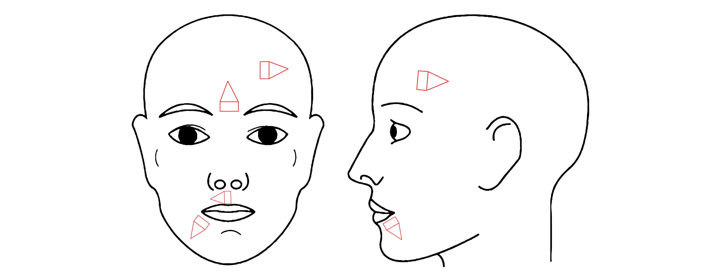

V-Y ADVANCEMENT FLAP
LESSON 5/8
Site typically used
Often used for lengthening the columella during repair of cleft palate and cleft lip deformities
Eyebrow
Forehead
Can be used to lengthen scars that are otherwise causing facial deformities
